The Basic HTTP GET/response interaction
实验步骤
- 启动 Chrome 浏览器。
- 启动 Wireshark 数据包嗅探器，在 display-filter-specification 窗口中输入 “http”，静待1分半钟后开始Wireshark数据包捕获。
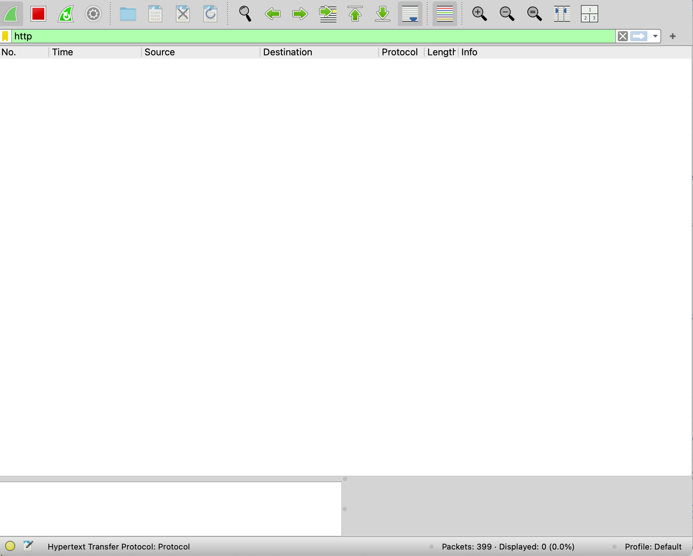 - 在浏览器中输入提供的 URL，然后停止 wireshark 包抓捕。
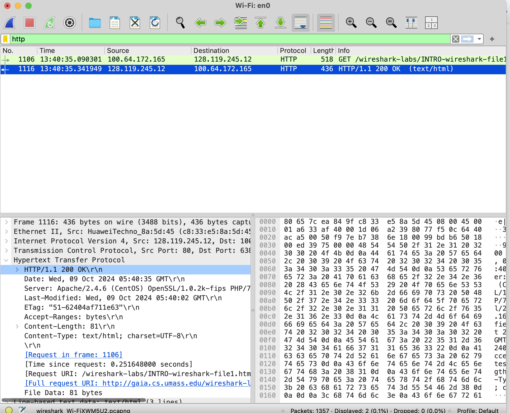
问题回答
-
Is your browser running HTTP version 1.0 or 1.1? What version of HTTP is the server running?
浏览器运行的是 HTTP version 1.1；HTTP 版本是Apache/2.4.6 (CentOS) OpenSSL/1.0.2k-fips PHP/7.4.33 mod_perl/2.0.11 Perl/v5.16.3
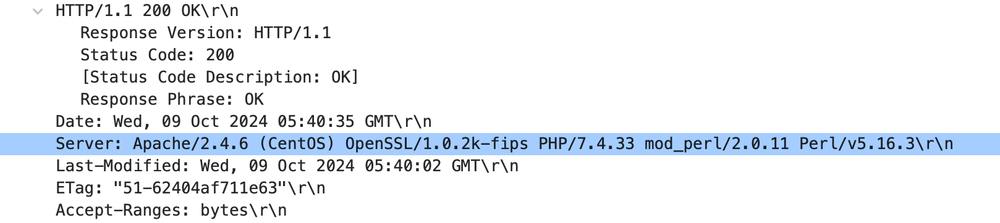 -
What languages (if any) does your browser indicate that it can accept to the server?
如图,是 zh-CN:
-
What is the IP address of your computer? Of the gaia.cs.umass.edu server?
如下图:
我的 IP:100.64.172.165
服务器IP: 128.119.245.12
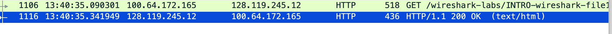 -
What is the status code returned from the server to your browser?
如下图
返回 200 OK
-
When was the HTML file that you are retrieving last modified at the server?
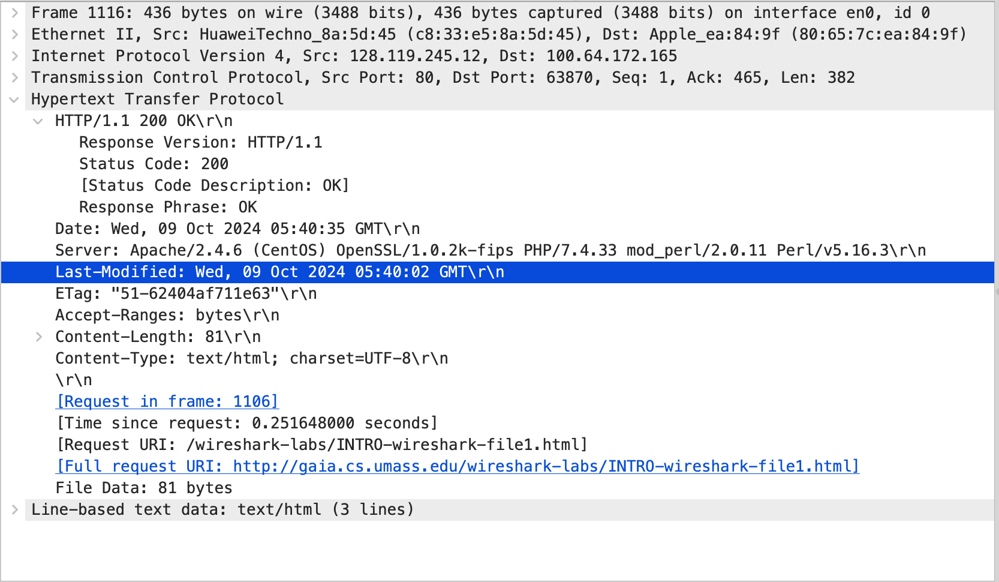
如上图: Wed, 09 Oct 2024 05:40:02 GMT -
How many bytes of content are being returned to your browser?
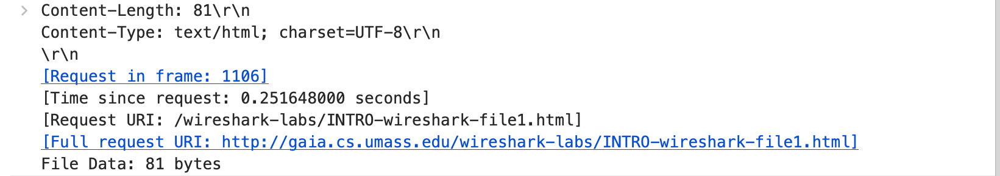
如上图: 81 bytes. -
By inspecting the raw data in the packet content window, do you see any headers within the data that are not displayed in the packet-listing window? If so, name one.
没有；如下图:
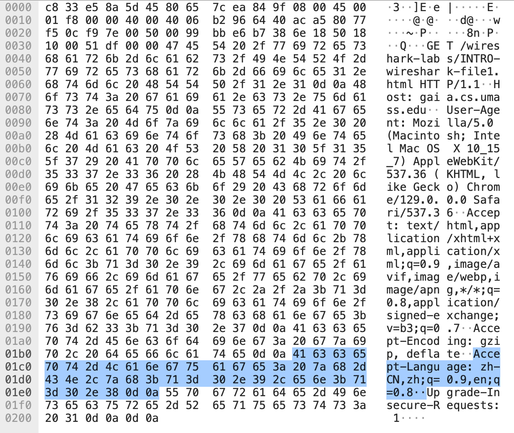
The HTTP CONDITIONAL GET/response interaction
实验步骤
和上面小结的步骤完全一样，第一次响应结果如下:
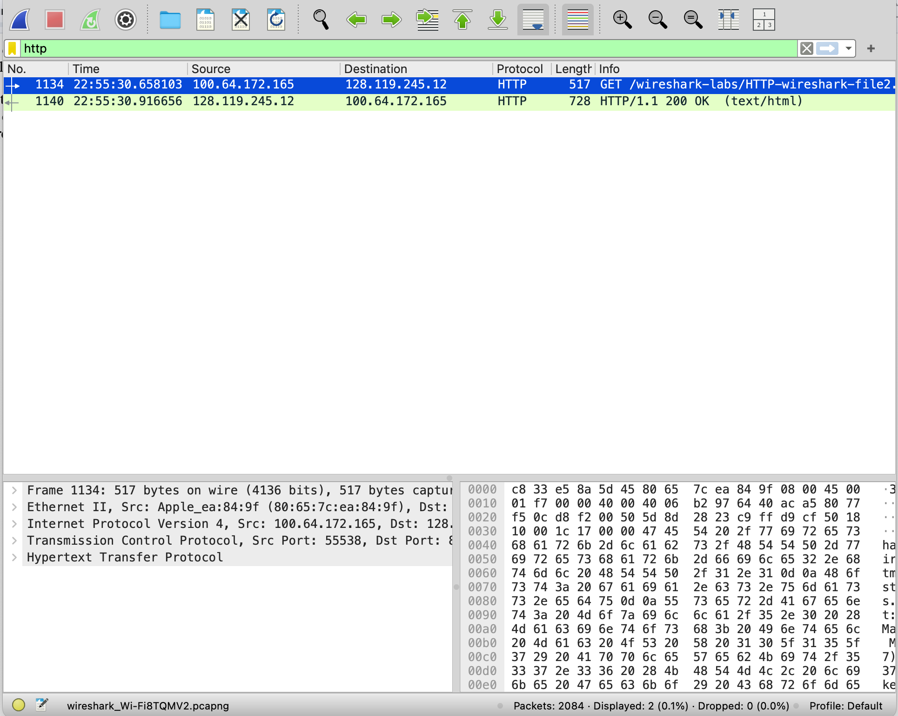
第二次如下:
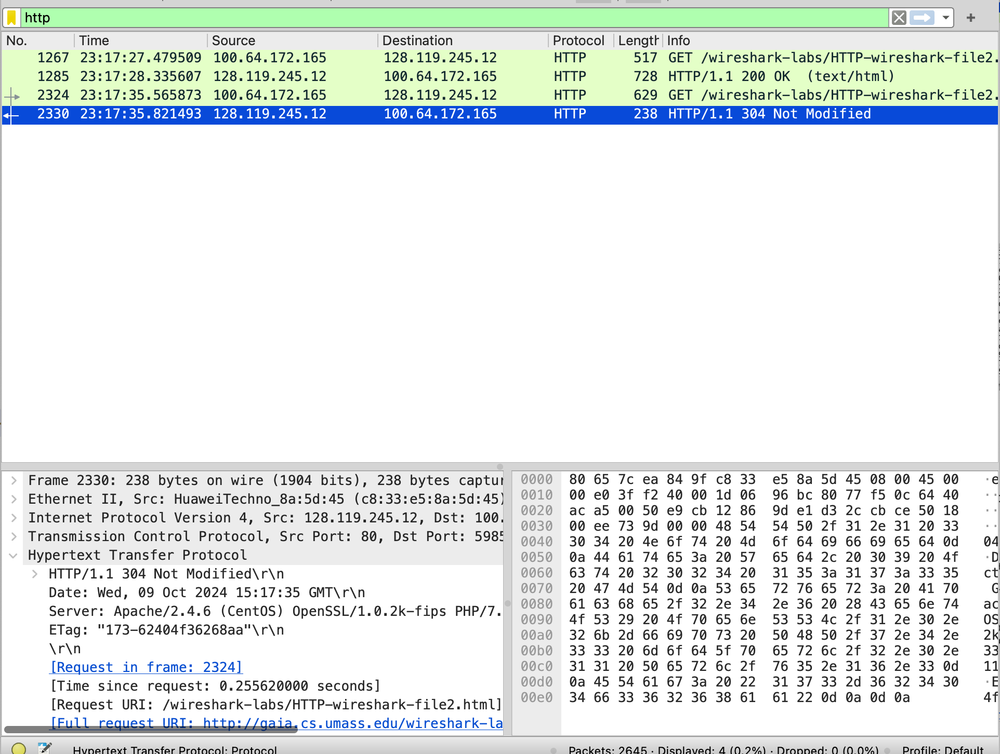
问题回答
-
Inspect the contents of the first HTTP GET request from your browser to the server. Do you see an “IF-MODIFIED-SINCE” line in the HTTP GET?
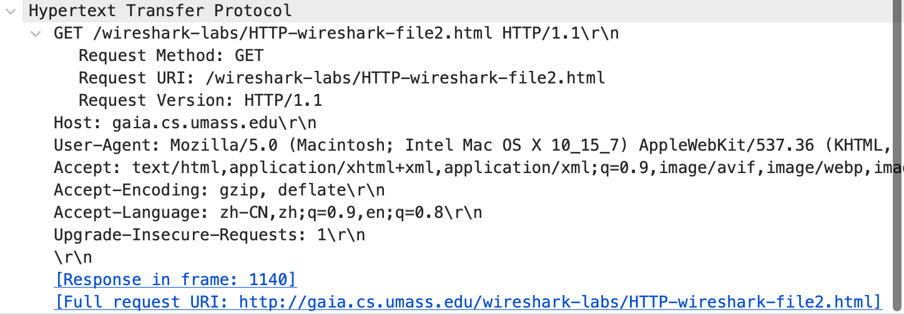
如上图,并没有发现。 -
Inspect the contents of the server response. Did the server explicitly return the contents of the file? How can you tell?
有，返回了一段 HTML 标记码，包括了网页的文本。如下图:
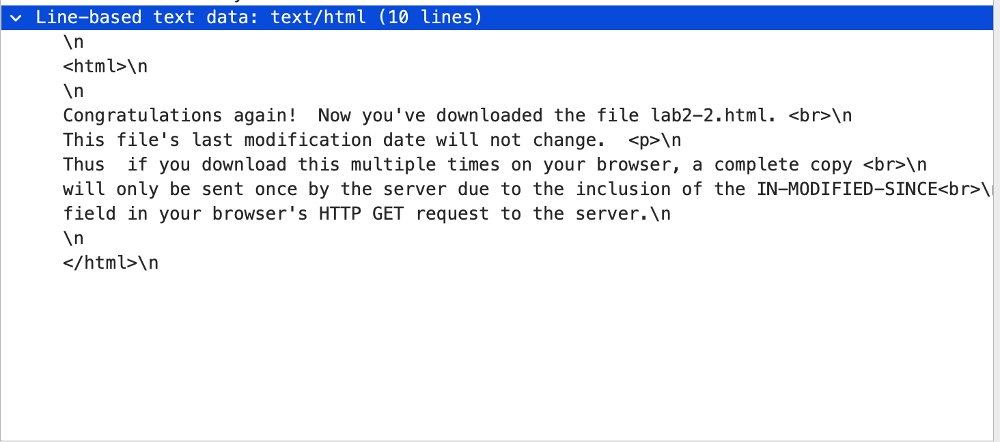 -
Now inspect the contents of the second HTTP GET request from your browser to the server. Do you see an “IF-MODIFIED-SINCE:” line in the HTTP GET? If so, what information follows the “IF-MODIFIED-SINCE:” header?
有，它指示的是时间信息，这个时间与网页最后一次修改时间一致。
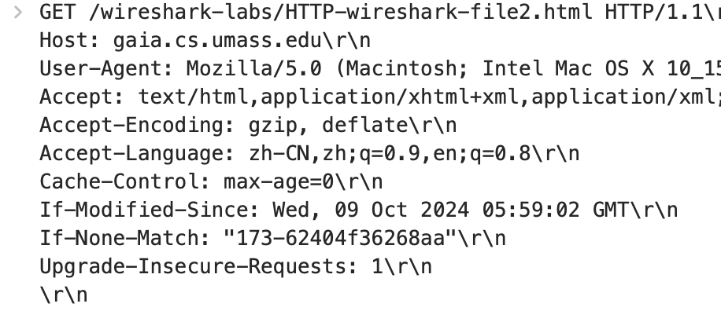 -
What is the HTTP status code and phrase returned from the server in response to this second HTTP GET? Did the server explicitly return the contents of the file? Explain.
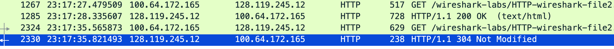
它返回了 304 状态码，这是因为如果客户端发送了一个带条件的GET 请求且该请求已被允许，而文档的内容（自上次访问以来或者根据请求的条件）并没有改变。
Retrieving Long Documents
实验步骤
步骤和之前完全相同,结果如下:
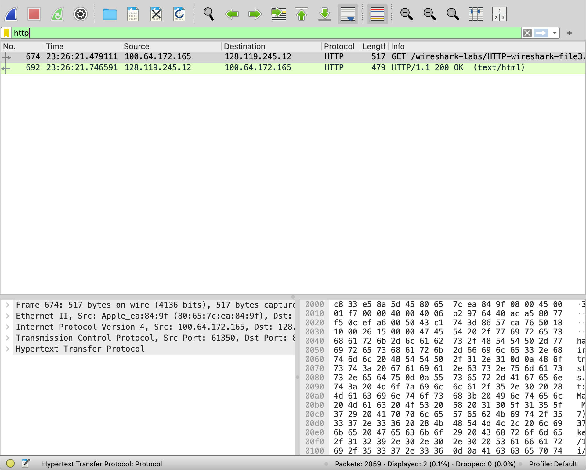
问题解答
-
How many HTTP GET request messages did your browser send? Which packet number in the trace contains the GET message for the Bill or Rights?
一共一个:
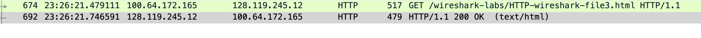
在 linked-based text data 这个包里面:
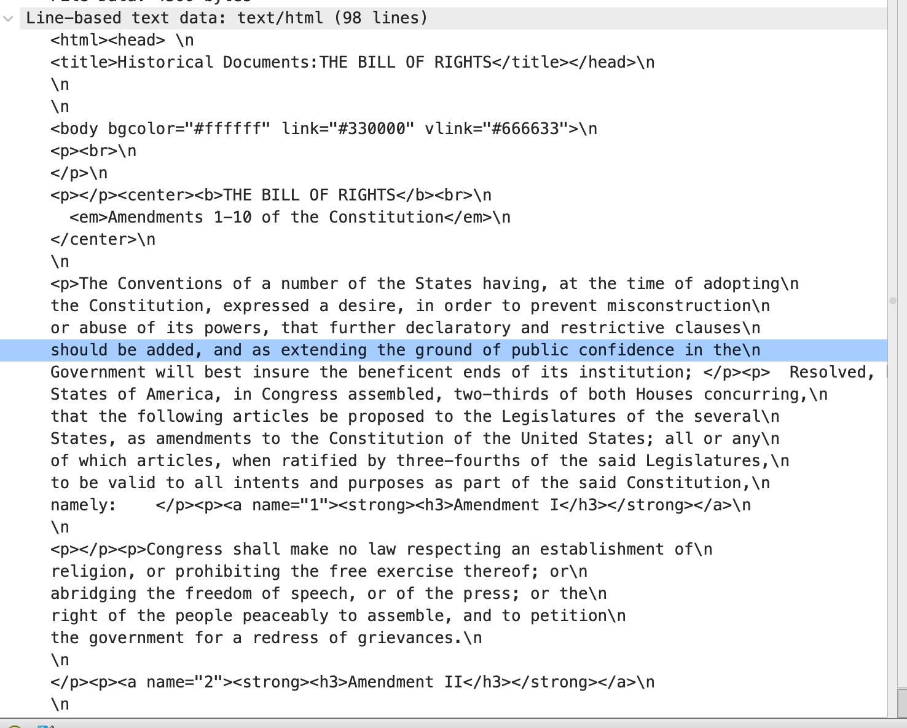 -
Which packet number in the trace contains the status code and phrase associated with the response to the HTTP GET request?

-
What is the status code and phrase in the response?
200 OK，表示请求成功，信息在返回的报文里 -
How many data-containing TCP segments were needed to carry the single HTTP response and the text of the Bill of Rights?
大概需要 5 个，如下图：
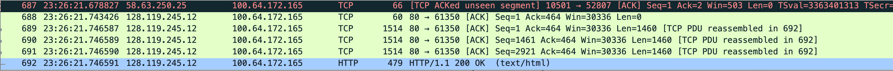
HTML Documents with Embedded Objects
实验步骤
结果如下:
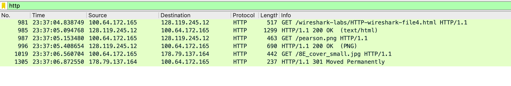
-
How many HTTP GET request messages did your browser send? To which Internet addresses were these GET requests sent?
一共发送了 3 个 HTTP GET 请求消息，这些 GET 请求发送到 128.119.245.12。
-
Can you tell whether your browser downloaded the two images serially, or whether they were downloaded from the two web sites in parallel? Explain.
串行下载，因为在第一张图片被下载完毕之后再开始下载第二张.
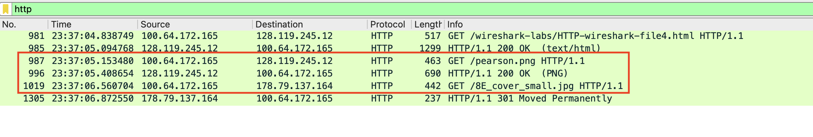
HTTP Authentication
实验步骤
最后结果为下图:
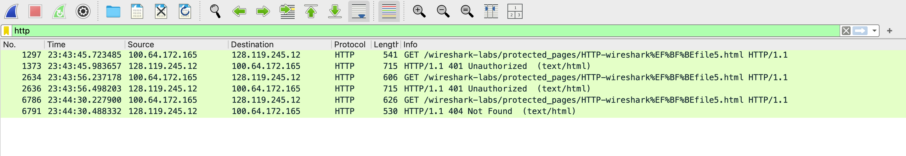
-
What is the server’s response (status code and phrase) in response to the initial HTTP GET message from your browser?
401 Unauthorization,该状态码表示用户没有访问权限，需要进行身份认证。 -
When your browser’s sends the HTTP GET message for the second time, what new field is included in the HTTP GET message?
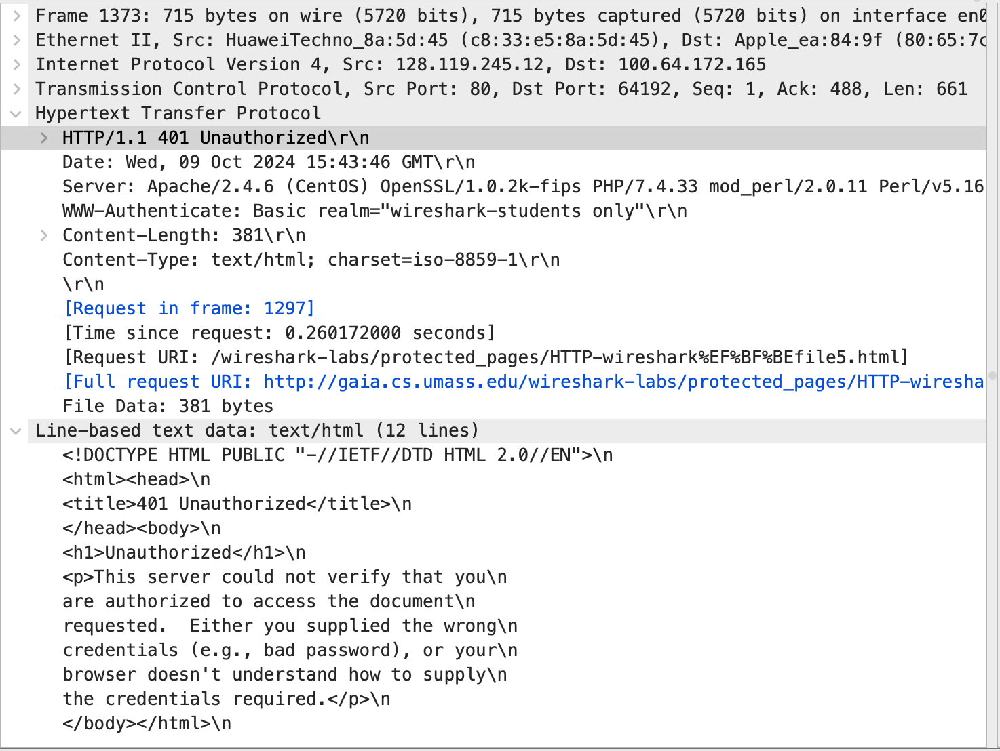
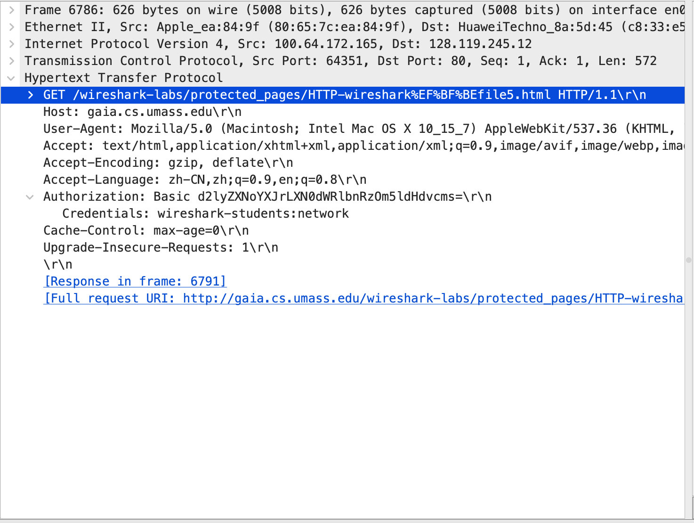
多了 Authorization 和 Credentials 字段，即用于网页提交用户名和密码。